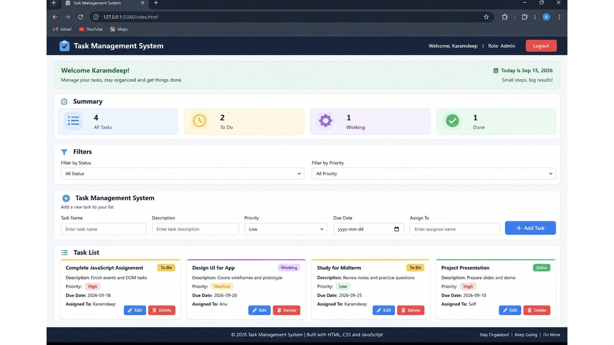
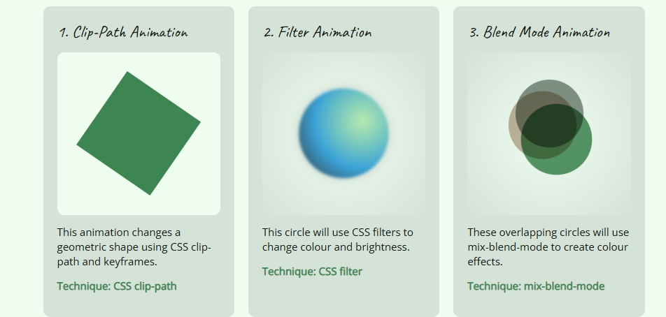

Karamdeep Singh
Digital Design + Development Student
I am a Digital Design and Development student. I enjoy creating websites and learning new skills.
ksingh86@northislandcollege.ca
Phone: 5794839126
Digital Design + Development Student
I am a Digital Design and Development student. I enjoy creating websites and learning new skills.
ksingh86@northislandcollege.ca
Phone: 5794839126
Here are some projects I have worked on during my Digital Design and Development studies.

I created a tourism website for Bamfield using HTML and CSS. The website provides information about local attractions, activities, and places to visit. This project helped me practice web page layouts, images, navigation, and CSS styling.

I created a user flow for a coffee maker application called BrewMate and a drink order application using JavaScript. The flow shows the complete process from placing the cup and selecting a drink to brewing the drink and removing the cup. This project helped me understand user flow and interaction design. Users can also choose a drink, select a size, add items to the order, and see the total cost.

I designed a mentoring application that helps connect mentors and mentees. I worked on the landing page, user interface, layout, components, and responsive design for desktop and mobile screens.

I created a task management system where users can add, edit, delete, and organize tasks. The system includes task filters, status information, and task summary counters. This project helped me improve my JavaScript and local storage skills.

I created three CSS animations using clip-path, filters, and blend modes. The first animation changes a shape between a triangle, square, and diamond. The second animation uses CSS filters to change the colour and brightness of a circle. The third animation uses three overlapping circles with blend modes to create different colour effects. View Animation Showcase
This is a placeholder for my second animation project. I will add my animation work here in Unit 3.